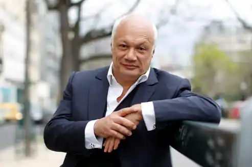

Народився 28.03.1960 року в Сент-Фуа-ле-Ліон, Франція.
Світова популярність краще всього демонструє весь той рівень таланту, яким буквально пронизана кожна строчка робіт бельгійського драматурга і письменника Еріка Шмітта. Переклади на 40 з гаком мов, постановки в 50 країнах світу – слава Шмітта давно вийшла за межі рідної країни, що є для творця чи не найкращим знаком якості з можливих.
Ерік-Еммануель Шмітт – бельгійський драматург і письменник; автор низки п'єс та вистав, активно показуваних у театрах всього світу. За походженням Ерік-Еммануель – эльзасец. Батьки виховували його як атеїста; пізніше він перекваліфікувався спочатку в агностика, а потім – у християнина. Навчався Шмітт в Ліоні, Франція (Lyon, France) і в Парижі (Paris); у паризькій Вищій Нормальній Школі він успішно написав докторську дисертацію з філософії і метафізики. Протягом 3 років Шмітт викладав в Шербуре (Cherbourg) і Університеті Шамбері (University of Chambéry). Літературна діяльність Шмітта почалася з роботи для театру; перша його п'єса, ‘Ніч в Валоні' (‘La nuit de Valognes'), ставилося в 1991-го та 1992-го як у Франції, так і за кордоном. Справжню славу в театральному світі Шміттом принесла постановка ‘Відвідувач' (‘Le Visiteur') – за неї Ерік-Еммануель отримав премію Мольєра в категоріях "кращий автор' і ‘краще уявлення'. Не менш вдало пройшли і наступні роботи Шмітта – ‘Золотий Джо' (‘Golden Joe'), ‘Загадкові варіації' (‘Variations Énigmatiques'), ‘Розпусник' (‘Le Libertin'), ‘Міларепа' (‘Milarepa'), ‘Фредерік або Бульвар злочинів' (‘Frédérick ou Le Boulevard du Crime'), ‘Готель двох світів' (‘Готель двох світів') і ‘Мсьє Ібрагім і квіти Корану' (‘Monsieur Ibrahim et les fleurs du Coran'). Часом у своїх роботах Шмітт розглянув безліч. В ‘Золотий Джо' було порушено цинічний погляд на життя, притаманного діячам світу великих фінансів. В ‘Загадкові варіації" автор представив відразу двох надзвичайно різних чоловіків, які обговорюють свої погляди на життя і любов – і, як з'ясовується, закоханих в одну і ту ж жінку. В історичній драмі ‘Розпусник' Шмітт розглядав життя великого філософа Дені Дідро (Denis Diderot); в 2000-му ця п'єса була екранізована. У 2001-му Ерік-Еммануель Шмітт отримав ‘театральний' гран-прі французької академії. З 2002-го Шмітт живе в Брюсселі (Brussels); у 2008-му він навіть отримав бельгійське громадянство. Зараз Ерік Шмітт відомий в прямому сенсі слова на весь світ; його п'єси перекладалися на 40 різних мов і ставилися в 50 країнах світу. Крім іншого, в роботах Шмітта можна угледіти вплив Сэмуэла Беккета (Samuel Beckett), Жана Ануя (Jean Anouilh) і Підлоги Клоделя (Paul Claudel). Одними лише п'єсами послужний список Шмітта зовсім не вичерпується – його перу належить цілий ряд цікавих повістей та оповідань. Особливо серед його робіт слід відзначити ‘Секта егоїстів' (‘La Secte des Égoïstes'), ‘Оскар і Рожева дама' (‘Oscar et la dame rose'), ‘Євангеліє від Пілата' (‘L' Évangile selon Pilate'), ‘Частина іншого' (‘La Part de l'autre'), ‘Коли я був витвором мистецтва' (‘Lorsque j étais une œuvre d'art') і ‘Діти Ноя' (‘l'enfant de Noé'). У літературних працях Шмітта завжди відчувався великий інтерес письменника до питань релігії; так, у своєму ‘Цикл незримого' Ерік-Еммануель зробив досить цікаву спробу знайти гармонію між існуючими світовими релігіями та культурами. Перша частина цього циклу, ‘Міларепа', оповідає про тибетського буддизму. У другій, ‘Месьє Ібрагім і квіти Корану', розглядається одна з різновидів ісламу, суфізм, і частково порушується іудаїзм. В ‘Оскар і Рожева дама' порушені питання, що стосуються християнства, ‘Діти Ноя' – іудаїзм і християнство. Завершує цикл оповідає про дзен-буддизмі робота ‘Борець сумо, який ніяк не міг погладшати' (‘Le Sumo qui ne pouvait pas grossir').